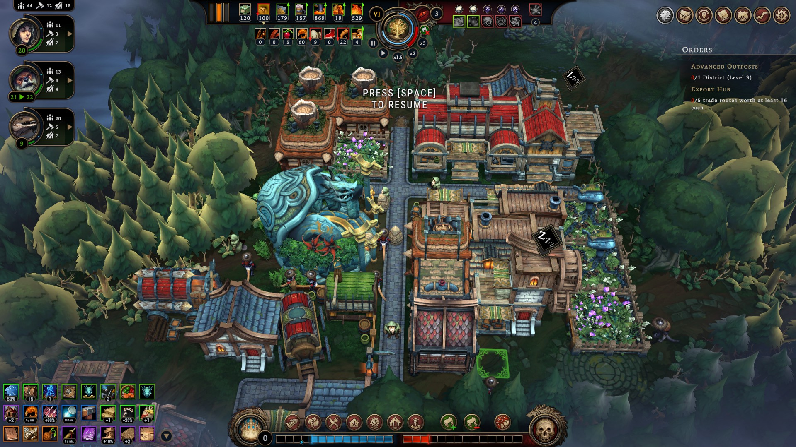
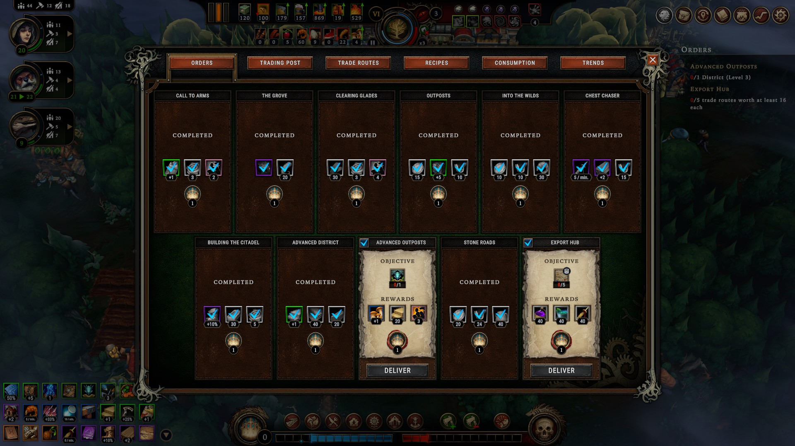
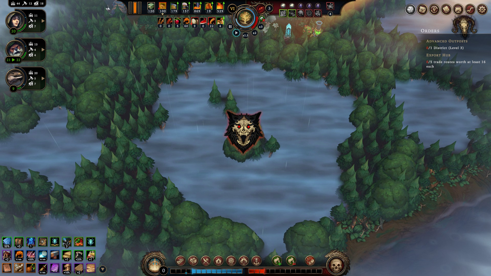

Against the Storm
Joel Haddock Mar 28, 2024
One of the great things about roguelites is how they can branch into so many different genres.
That said, I have to admit I didn't ever expect to see a city builder.
Against the Storm takes the unexpected step of breaking a city builder down into digestible chunks - individual settlements with discrete goals played out over and over.
A friendly community, constantly soaked
As a viceroy appointed by the queen, your job is to lead an intrepid band of settlers out from the safety of the world's only remaining city to push through the wilderness and bring back critical resources.
Each settlement begins with a handful of your various human/animaloid settlers, a handful of resources, and a sacred fire pit to push back the gloom of the ever-presant storm. As your settlement grows, the queen will issue new orders for you to fulfil. Meet them and you will be rewarded. But the long you put them off, the more the queen's impatience grows. Let it go for too long, and your settlement will fail as you are recalled to the capital.
There are several different map biomes with inherent bonuses and penalties, larger "regional" modifiers from certain map features, and randomized resources,events, and blueprints for each settlement. There is no guarantee your build plan from one settlement will have any chance of survival on the next one (or that you will even see the same buildings).
The Queen is not shy about asking for things
On top of that, following the conclusion of each settlement's run (regardless of whether you win or lose), you gain resources you can spend back on the capital to unlock permanent improvements, ranging from bonus resources to special mission types to default building plans.
All in all, the sheer number of factors involved makes the somewhat repetitive sounding task of building settlements over and over again a lot more wild and unpredictable.
It's this variety that keeps Against the Storm fresh for me. Even when I think I've got a plan, the realities of the orders from the fickle queen combined with the unknowns lurking in each forest glade leave me scrambling to reconsider.
I'm sure this is fine to clear a path to
At the moment, the game is still in early access. The devs have a lot of features still planned, and are very responive to player feedback. Still, even at this state, the game has plenty to offer.
That's why Against the Storm is the best roguelite.
So What Is This?
Welcome to the Roguelite House, the place for all things roguelite.
If you don't know what a roguelite is, you should probably start here.
What're We Running Now?
- Against the Storm
- Balatro
Latest Posts
-
What Is A Roguelite?
Maybe you should start here.
-
What Is A Roguelite?
Maybe you should start here.
-
Hades
Hades is the best Roguelite
-
Slay the Spire
Slay the Spire is the best Roguelite